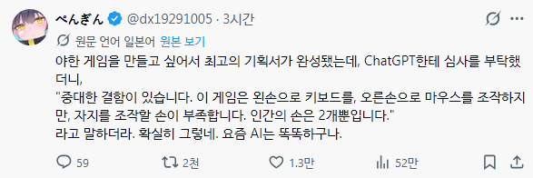
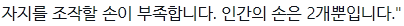

한손만 쓰는 게임이면 플레이타임이 3분~10분이되겟지
야겜은 게임성이 좋으면 불만이 많아진다더라
ㄹㅇ 팰월드하는데 불편하더라

선생님? 그게 뮤슨 말이죠..??
숨을 10분만 참아줘
생각이상으로 중요하지 저거
갤러리에서만 한손플레이 되면 돼...

양손 쓰는 야겜이면 그냥 게임에 보보꼭보해주는거잖어..
자지를 조작 ㅋㅋ
사람은 발로도 해
AI가 꼬추를 만져본적이 없으니 모르지
게임은 게임대로 두고 야한거 나오면 맘에 드는 상황에서 모드를 변경하는거다
그러니 야겜은 조작을 재촉하면 안되지
진동 보조기구를 팔면 되잔아
지랄ㅋㅋ 디바도 한손으로 하는데 어딜 텍스트따리가
ㅋㅋㅋㅋ
ai가 인정한 꼴림이라고? 맛보기 테스트 플레이 파일 어디씀?
나와라 ai 손!
한국만 야겜 못만들어
"무발기 사정급의 게임급은 아니다"
지피티 이색 오랜만에 해보니까 야한거 안된다고 개지랄 염병 떨다가 어느순간 딱 만들어짐 ㅋㅋㅋ 할수 있는데 안하는거라고 ㅋㅋ
요즘은 게임 연동되는 기능있는 오나홀도 있다고하던데